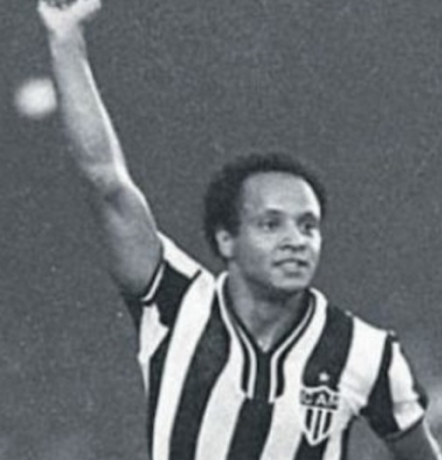
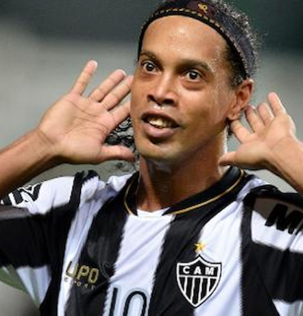
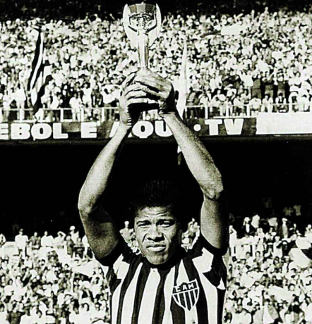
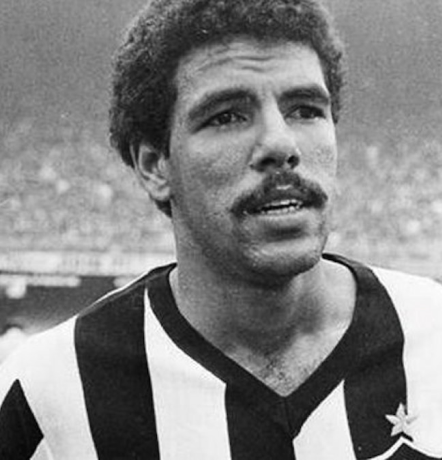
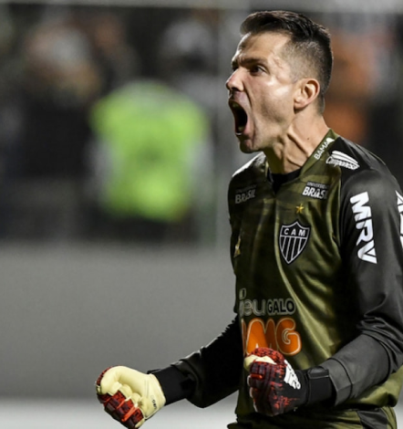

Atlético Mineiro
O Atlético-MG foi fundado em 25 de março de 1908, por 22 jovens que se reuniram no Parque Municipal, em Belo Horizonte. O time foi o vencedor da primeira edição do Campeonato Brasileiro, em 1971 - voltando a vencer apenas em 2021. Também foi vice-campeão nacional em 1977 (invicto), 80 e 99
Títulos
Campeonato Brasileiro: 2
Copa Libertadores da América: 1
Campeonato Mineiro: 47
Copa do Brasil: 2

Ídolos
- 
- 
- 
- 
- 
Reinaldo
"Despontando como um dos mais célebres ídolos do Atlético Mineiro está Reinaldo, o Rei da massa atleticana. A curta carreira marcada por lesões de difícil reversão não impediu o craque de se tornar além de um dos maiores ídolos, o maior artilheiro da história do clube também.
Ronaldinho
Pela equipe mineira, Ronaldinho marcou 28 gols em 88 partidas. Foi campeão mineiro em 2013, campeão da Copa Libertadores da América 2013 e da Recopa Sul-Americana 2014. Como em todas as passagens pelos clubes anteriores, o craque encantou a massa atleticana e promoveu belos espetáculos vestindo a camisa do Galo. Após conquistar a América, Ronaldinho se tornou o primeiro jogador de futebol a vencer a Copa do Mundo, UEFA Champions League, Copa Libertadores da América e o troféu de melhor jogador do mundo.
Dadá Maravilha
Foi autor do gol da vitória de 1 a 0 sobre o Botafogo em pleno Maracanã. É também o segundo maior artilheiro da história do clube, com 211 gols. O próprio atacante disse certa vez: “Eu me identifiquei muito com os clubes onde passei. Mas o Atlético Mineiro foi especial.” Devido a grandes atuações pelo Galo, o jogador acabou sendo convocado para a Copa do Mundo de 1970 por influência do então presidente da república General Médici, já que haviam desavenças entre Dadá e João Saldanha, técnico da Seleção Brasileira antes de Zagallo assumir o comando técnico. A seleção acabou conquistando o tricampeonato.
Toninho Cerezo
Foi hexacampeão mineiro entre 1978 e 1983, além de ter sido um dos principais jogadores brasileiros da década de 70 e 80. Por duas vezes foi eleito Bola de Ouro pela Revista Placar, em 1977 e 1980, e Bola de Prata por três vezes, 1976, 1977 e 1980. Toninho Cerezo alcançou o sonho de jogar pela seleção brasileira após ótimas atuações com a camisa do Atlético. Fez parte da badalada seleção treinada por Telê Santana que disputou a Copa do Mundo de 1982, na Espanha. Jogadores como Zico, Sócrates, Falcão e Júnior encheram os olhos do mundo mesmo não conquistando o mundial. Curiosamente, o técnico que lançou Cerezo no time titular da equipe atleticana em 1975, foi o mesmo comandante da seleção de 1982, o mineiro Telê Santana.
Victor
O goleiro Victor foi um dos heróis do título da Copa Libertadores da América de 2013, quando brilhou na disputa de pênaltis e foi eleito o melhor jogador da partida final, defendendo mais de uma cobrança da equipe paraguaia do Olimpia. Nas quartas de final e nas semifinais daquela edição do torneio, Victor também foi destaque em defesas decisivas que acabaram determinando o futuro do Atlético, que felizmente foi o título sul-americano. No ano seguinte, em 2014, o Atlético Mineiro foi finalista da Copa do Brasil, e o adversário seria o maior rival, a equipe do Cruzeiro. O maior clássico de Minas Gerais seria a atração daquela final de Copa do Brasil, e para o delírio da torcida, o Galo foi o vencedor. Victor era o titular na meta atleticana e sem a sua confiança e liderança, as coisas teriam sido um pouco mais complicadas, mas com ele deu Galo campeão.
MRV Arena
A Arena MRV (formalmente chamada de Estádio Presidente Elias Kalil)[11] [12] é um estádio de futebol brasileiro em construção, localizado em Belo Horizonte. A arena pertence ao Clube Atlético Mineiro, que mandará seus jogos no local.
Torcida
Grêmio Cultural e Recreativo Torcida Organizada Galoucura é a maior torcida organizada de Minas Gerais e a mais importante do Clube Atlético Mineiro fundada em 11 de novembro de 1984. Seus fundadores são, Raimundo José Lopes Ferreira (Mundinho), Paulo César Ribeiro (Melão), Fernando Antônio Fraga Ferreira e José Roberto Fraga Ferreira (Pitanga). Seu primeiro jogo foi Atlético e Cruzeiro no Mineirão no mesmo ano. O significado do nome da Galoucura é a loucura pelo galo. Seu lema é Humildade e Disciplina.